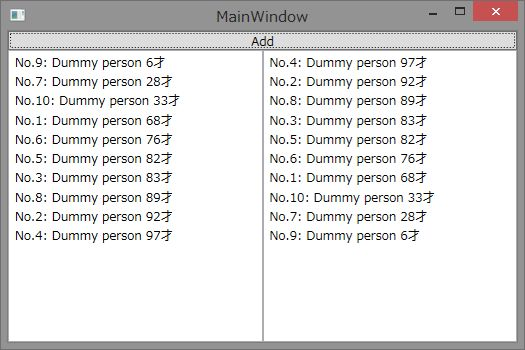

WPFでデータをソートして表示する方法
サンプルプログラムの概要
このサンプルプログラムは、Windows Presentation FoudationのCollectionViewSourceを使用してデータをソートして表示するプログラムです。CollectionViewSourceのソート機能を使うことで、バックグラウンドで持つデータはソートしないまま、表示のソートを行うことが可能です。
サンプルプログラムでは、画面の左右にあるListBoxに1つのコレクションを異なるソート条件で表示しています。

サンプルプログラムの解説
このサンプルプログラムでは、画面に表示するデータを表すために以下のようなPersonクラスを定義しています。
C#
スクリプトの編集|Remove
csharp
namespace WPFSortSample
{
/// <summary>
/// 画面に表示するためのダミーオブジェクト
/// </summary>
public class Person
{
public string Name { get; set; }
public int Age { get; set; }
public override string ToString()
{
// 画面に表示するための文字列を作成
return string.Format("{0} {1}才", this.Name, this.Age);
}
}
}
namespace WPFSortSample { /// <summary> /// 画面に表示するためのダミーオブジェクト /// </summary> public class Person { public string Name { get; set; } public int Age { get; set; } public override string ToString() { // 画面に表示するための文字列を作成 return string.Format("{0} {1}才", this.Name, this.Age); } } }
上記PersonクラスのAgeプロパティをキーにしてソートします。
WPFでのソートは、CollectionViewSourceクラスのSortDescriptionsプロパティを使用すると簡単にできます。SortDescriptionsプロパティには複数のSortDescription構造体を設定できます。SortDescription構造体はCollectionViewSourceクラスのSourceプロパティに設定されたコレクション内のオブジェクトのプロパティをキーにして昇順でソートするか降順でソートするか指定可能です。
サンプルプログラムでは、MainWindow.xamlのResourcesにAgeプロパティを昇順・降順でソートする2種類のCollectionViewSourceを定義しています。
XAML
スクリプトの編集|Remove
xaml
<CollectionViewSource x:Key="source1">
<CollectionViewSource.SortDescriptions>
<ComponentModel:SortDescription
Direction="Ascending"
PropertyName="Age" />
</CollectionViewSource.SortDescriptions>
</CollectionViewSource>
<CollectionViewSource x:Key="source2">
<CollectionViewSource.SortDescriptions>
<ComponentModel:SortDescription
Direction="Descending"
PropertyName="Age" />
</CollectionViewSource.SortDescriptions>
</CollectionViewSource>
</Window.Resources>
<CollectionViewSource x:Key="source1"> <CollectionViewSource.SortDescriptions> <ComponentModel:SortDescription Direction="Ascending" PropertyName="Age" /> </CollectionViewSource.SortDescriptions> </CollectionViewSource> <CollectionViewSource x:Key="source2"> <CollectionViewSource.SortDescriptions> <ComponentModel:SortDescription Direction="Descending" PropertyName="Age" /> </CollectionViewSource.SortDescriptions> </CollectionViewSource> </Window.Resources>
このCollectionViewSourceを画面のListBoxのItemsSourceプロパティにBindingしています。
XAML
スクリプトの編集|Remove
xaml
<ListBox Grid.Row="1" ItemsSource="{Binding Source={StaticResource source1}}" />
<ListBox Grid.Row="1" Grid.Column="1" ItemsSource="{Binding Source={StaticResource source2}}" />
<ListBox Grid.Row="1" ItemsSource="{Binding Source={StaticResource source1}}" /> <ListBox Grid.Row="1" Grid.Column="1" ItemsSource="{Binding Source={StaticResource source2}}" />
C#
スクリプトの編集|Remove
csharp
public MainWindow()
{
InitializeComponent();
// XAMLで定義したCollectionViewSourceのSourceにコレクションを設定
var source1 = this.Resources["source1"] as CollectionViewSource;
if (source1 != null)
{
source1.Source = people;
}
var source2 = this.Resources["source2"] as CollectionViewSource;
if (source2 != null)
{
source2.Source = people;
}
}
public MainWindow() { InitializeComponent(); // XAMLで定義したCollectionViewSourceのSourceにコレクションを設定 var source1 = this.Resources["source1"] as CollectionViewSource; if (source1 != null) { source1.Source = people; } var source2 = this.Resources["source2"] as CollectionViewSource; if (source2 != null) { source2.Source = people; } }
画面上部にあるボタンのクリックイベントでは、年齢に乱数を設定したPersonクラスのインスタンスを作成してコレクションに追加しています。ポイントは、people変数の中では、何もソートをしていないという点です。
C#
スクリプトの編集|Remove
csharp
private void AddPersonButton_Click(object sender, RoutedEventArgs e)
{
// ランダムな年齢のPersonクラスのオブジェクトを追加する
var p = new Person
{
Name = "No." + (this.people.Count + 1) + ": Dummy person",
Age = this.RandomObject.Next(100)
};
this.people.Add(p);
}
private void AddPersonButton_Click(object sender, RoutedEventArgs e) { // ランダムな年齢のPersonクラスのオブジェクトを追加する var p = new Person { Name = "No." + (this.people.Count + 1) + ": Dummy person", Age = this.RandomObject.Next(100) }; this.people.Add(p); }

参考情報
このサンプルで使用している代表的なクラスのMSDNへのリンクです。
-
CollectionViewSourceクラス
http://msdn.microsoft.com/ja-jp/library/system.windows.data.collectionviewsource(v=vs.100).aspx